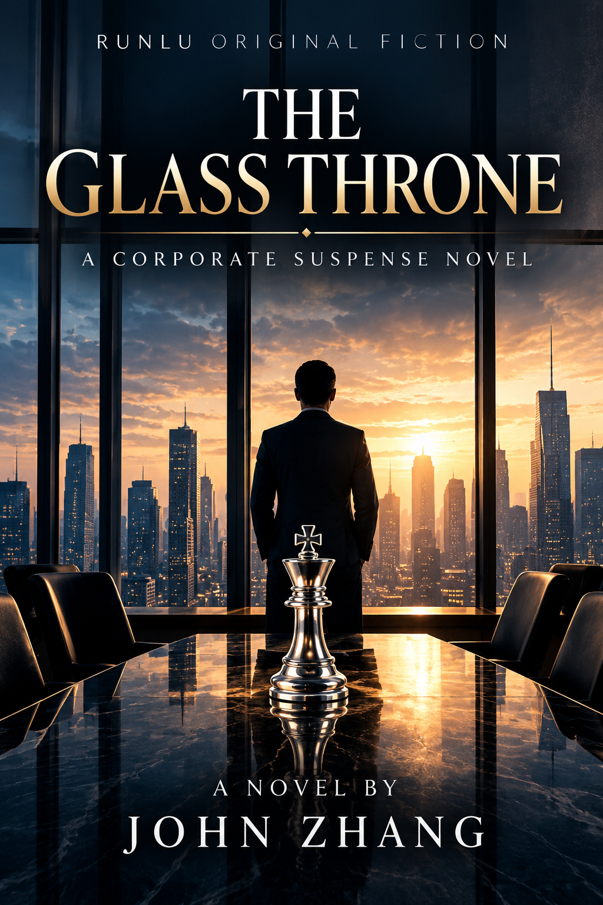

A single novel, sixty chapters
THE GLASS THRONE is an English-language corporate suspense novel by JOHN ZHANG, presented by RUNLU. Its sixty chapters form one complete book.
Publication record · 11 October 2026
English edition · Available on Apple Books (51 stores)
The English edition was submitted during the Thanksgiving long weekend. Apple Books Connect now shows it as available in 51 stores. A direct purchase link will be added after the public product URL is verified.
A separate Chinese adaptation
A Chinese adaptation, 《玻璃王座》, is in development with a Chinese business setting. The four languages on this website describe the project; they do not imply that four book editions are available.

Read a few pages
Three short excerpts from the submitted English manuscript.
Chapter 1
At 4:07 on Monday afternoon, Richard Vale announced his retirement and gave three hundred people twelve months to pretend they had not immediately begun calculating what it meant for them.
Chapter 2
By 8:07 Tuesday morning, Vantage Meridian had developed a new category of conversation. People discussed Richard Vale's retirement without discussing Richard Vale's retirement.
Chapter 3
By noon, the company had three candidates even though the board had named none. That was how Vantage Meridian preferred important facts: unofficial enough to deny, organized enough to trade.